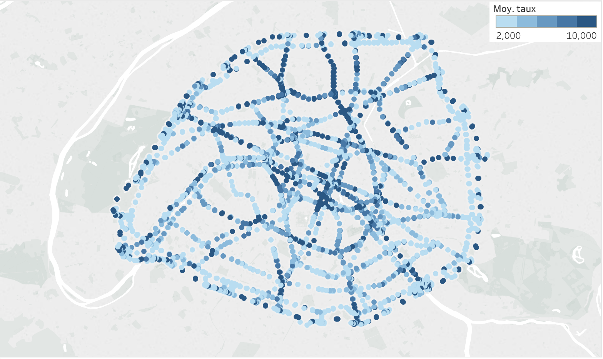
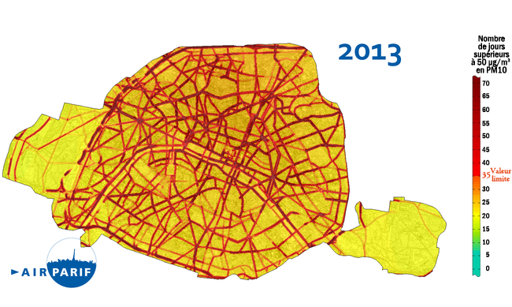
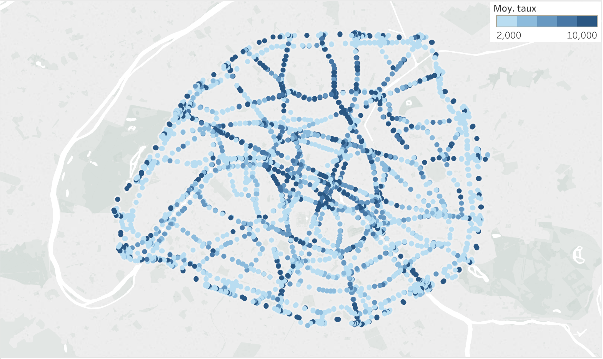
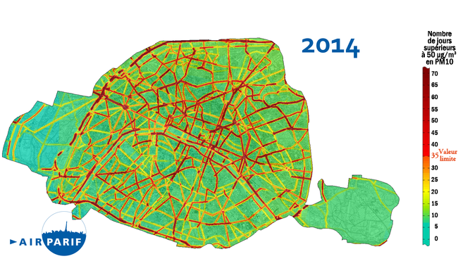
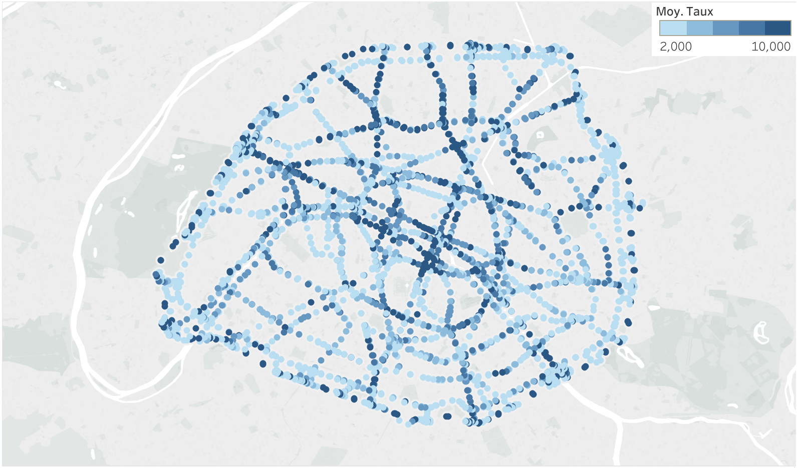
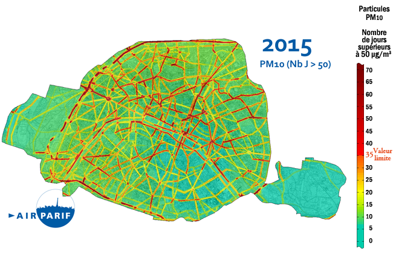
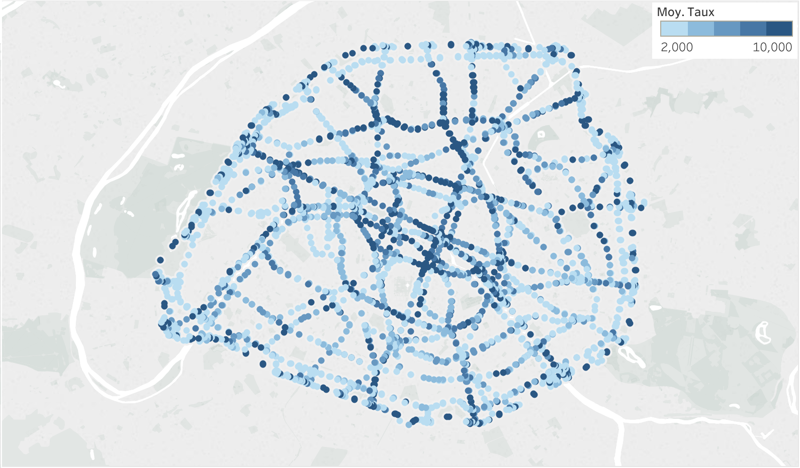
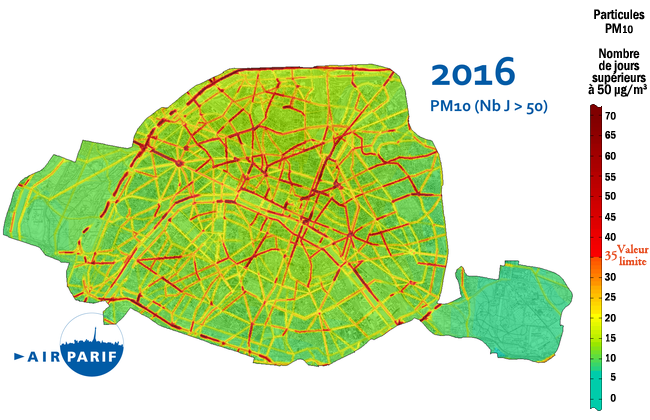
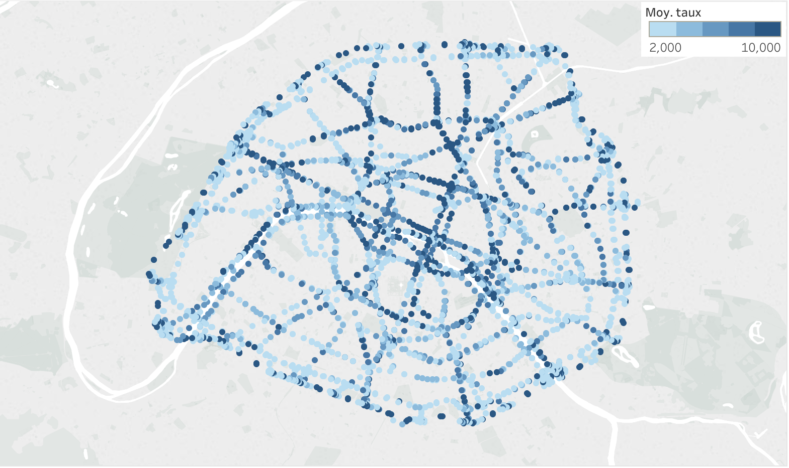
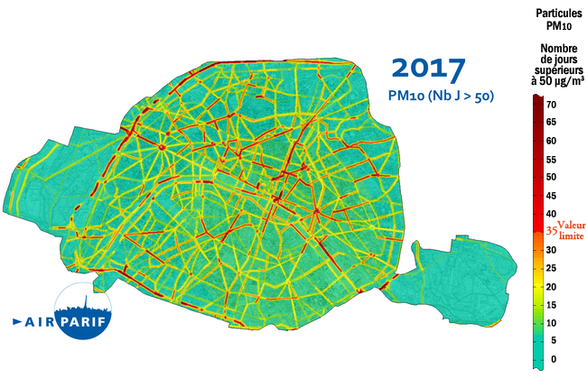
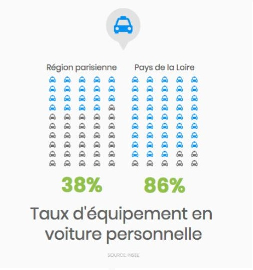
Bouger, se déplacer, voyager… Acquise au fur et à mesure de l’évolution et de la démocratisation des transports,
la mobilité est une liberté dont personne ne voudrait être privé.
Récemment, la hausse du prix du carburant amène les Français à se poser la question de leurs déplacements :
sommes-nous prêts à nous passer d’une voiture individuelle, si pratique ?
Alors que 89% des Parisiens affirment avoir le choix entre plusieurs moyens de transport selon l’INSEE,
on constate effectivement que l’usage de la voiture est à la marge de celui des transports en communs.
Avec le taux d’équipement le plus faible de France (36,8% contre 86% en Pays de la Loire), uniquement 13% de Parisiens se rendent au travail en voiture.
Dans une ville qui laisse de plus en plus de place aux autres modes de transport, il semble légitime de se poser la question de l’avenir de la voiture à Paris.
Et pour mieux l’anticiper, nous proposons de nous intéresser à son évolution sur les dernières années, tout en y intégrant la notion de la pollution de l’air.
En effet, n’oublions pas que la pollution entraîne en France 48 000 décès par an.
Après une augmentation continue du débit routier depuis 2013, celui-ci chute brutalement en 2017. Les voies sur berge ont-été officiellement rendue piétonnes cette même année. Faut-il y voir une causalité par effet de découragement ?
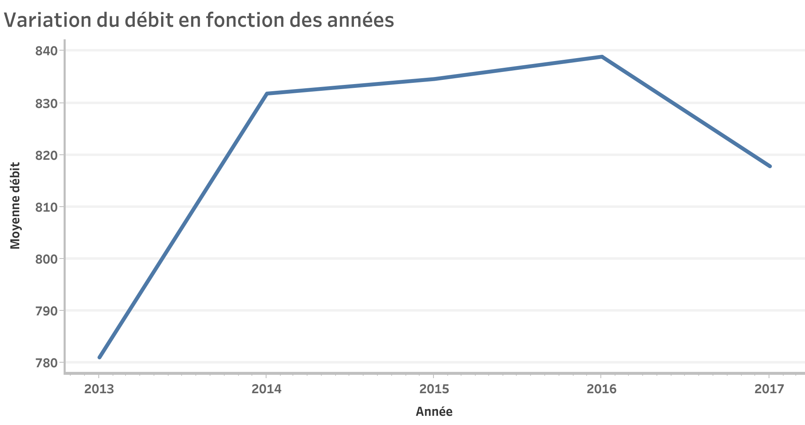Contrairement aux idées reçues, le trafic routier est moins dense en 2017 qu’en 2016. La piétonnisation de certains axes n’a donc pas créé d’embouteillages supplémentaires aux moyennes des années précédentes.
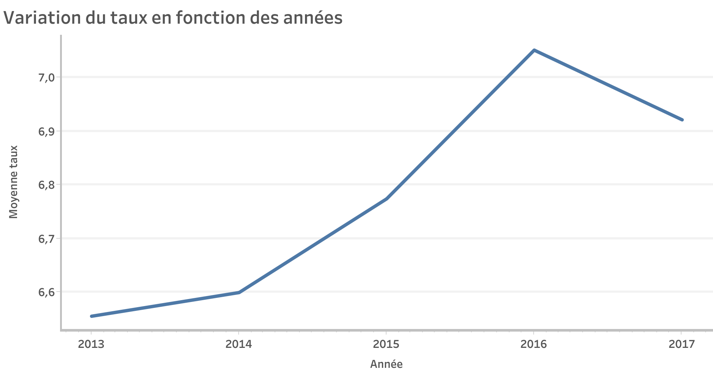Et cela malgré l’augmentation continue du trafic routier jusqu’à 2016...
Comment est-ce possible ?
L’adoption de plus en plus large de véhicules propres, nourrie par une politique publique volontariste, semble avoir contribué à une lutte efficace contre la pollution de l’air de capitale.

En tant que « polluant toxique » et parce qu'il est l'un des polluants majeurs à Paris, le dioxyde d'azote fait l'objet d'un suivi obligatoire par les observatoires de la pollution de l'air. En France, sa valeur limite horaire est de 200 µg/m3, fréquemment dépassée dans les grandes villes et près des grands axes routiers ou aéroports en l'absence de vent ou de circulation de l'air.

Outre les gaz, l'atmosphère contient des matières en suspension que l'on regroupe sous le terme général de "particules fines".
Ces poussières sont souvent issues de combustions incomplètes.
Les particules fines pénètrent en profondeur dans les poumons. Elles peuvent être à l’origine d’inflammations,
et de l’aggravation de maladies cardiaques et pulmonaires. De plus, elles peuvent transporter des composés cancérigènes
absorbés sur leur surface jusque dans les poumons.

VIVRE À PARIS
4 CIGARETTES / SEMAINE
VIVRE À PEKIN
28 CIGARETTES / SEMAINE
L’ONG européenne Transport et Environnement a relevé les indices de pollution aux particules fines à Paris en août 2018
et les a converti en équivalents cigarette selon la méthode de l’organisation Berkeley Earth.
Selon cette méthode, respirer 22 microgrammes/m3 de particules fines produit les mêmes effets sur les poumons que le tabagisme.
Sans surprise, les axes les plus encombrés de la capitale demeurent les plus touchés par la pollution aux particules fines.
Très concrètement, il s’agit en grande partie de personnes qui utilisent leur voiture pour se rendre au travail.
Cela explique pourquoi le trafic chute radicalement les week-ends et en été.
Quelles alternatives pourrions-nous leur proposer pour diminuer le trafic et les aider à économiser en carburant ?

La Mairie de Paris envisage une disparition des voitures à essence d’ici 2030.
Voici quelques pistes pour s’y préparer :
Passer dès maintenant à l’électrique → connaître les aides proposées par la Mairie
Recourir au covoiturage pour se rendre au travail → rechercher un trajet en Ile de France
Se mettre au vélo → là encore, la Mairie peut vous aider !
Ce site a été réalisé par 4 étudiantes du master MIN (Télécom ParisTech - Sciences Po Paris) dans le cadre d'un cours: Hanady Abboud, Juliette Dixmier, Claire Pétreault, Joanne Saba.